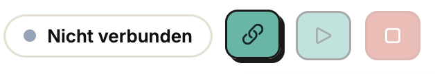
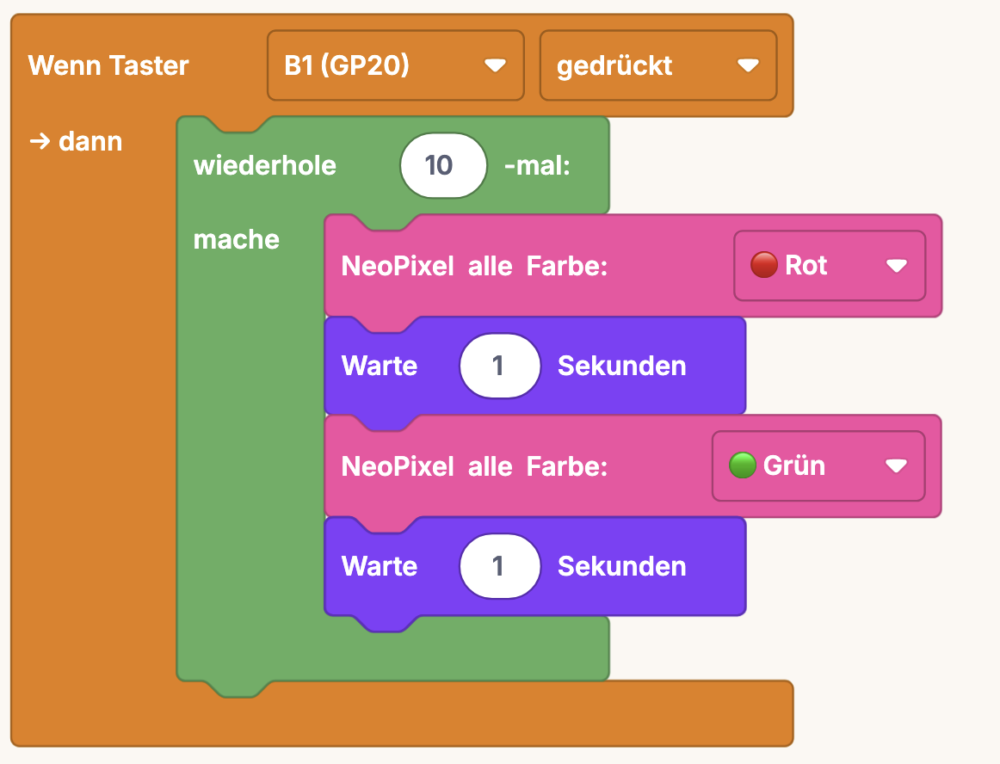
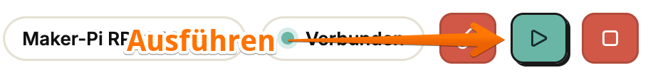
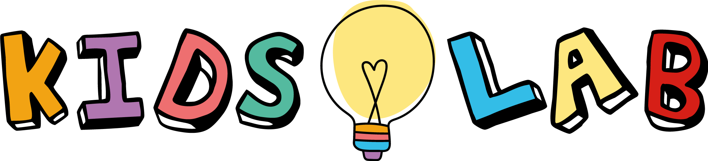

Beispiel nachbauen
Dieses kleine Programm aus Blöcken zusammenstecken: Taster gedrückt → NeoPixel wechselt 10× zwischen Rot und Grün.
Board am Computer, Browser auf, loslegen.
Maker-Pi per USB-C-Kabel mit dem Computer verbinden.
Chrome oder Edge öffnen (andere Browser können nicht auf das Board schreiben), mos.kidslab.de aufrufen und auf „Editor öffnen" klicken.
Oben rechts auf „Verbinden" klicken und das Board in der Liste auswählen.

Dieses kleine Programm aus Blöcken zusammenstecken: Taster gedrückt → NeoPixel wechselt 10× zwischen Rot und Grün.

Auf „Ausführen" klicken und schauen, was passiert.

Scannen, im Browser öffnen, loslegen.
Kein Konto, keine Installation — alles läuft lokal im Browser.
